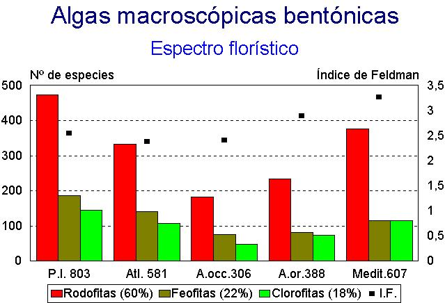

| Página previa: | Algas_Introduccion.htm |
| Para
ver la información sobre estas algas véase el fichero
índice: indice.htm |
|
| Morfología del talo | Sistema de ramificación predominante | ||
| Dicotómica | Lateral | Basal, palmeada, irregular o sin ramificación | |
| Filamentoso | Ceramium rubrum (corticado) Polysiphonia sp. (polisifonal) |
Bryopsis
corymbosa (sifonal) Chara sp. (verticilada) Cladophora sp. (hemisifonal) Ectocarpus siliculosus |
Chaetomorpha
aerea (hemisifonal)
Elachista fucicola (base pseudoparenquimática) |
| Ejes cilíndricos + ramitas filamentosas | Cladostephus spongiosus (rámulas verticiladas) | Asparagopsis armata Halopteris filicina+scoparia |
-- |
| Ramas cilíndrícas | Bifurcaria
bifurcata (material procedente de Galicia) Codium decorticatum (sifonal) Codium tomentosum (sifonal) Scinaia pseudocrispa (casi hueca, blanda) |
Cystoseira
usneoide(rámulas cónicas)
Halopitys incurvus (rámulas casi pectinadas) Hypnea musciformis |
-- |
| Ramas fusiformes articuladas | -- |
Chylocladia verticillata | -- |
| Ramas aplanadas | Chondrus crispus (material
procedente Galicia) Gymnogongrus patens |
Gelidium microdon Gelidium sexquipedale Plocamium cartilagineum (rámulas pectinadas) Sphaerococcus coronopifolius |
-- |
| Laminares sin diferenciación | Dictyota dichotoma | Halymenia floresiana | Enteromorpha
compressa Padina pavonica Ulva rigida |
| Laminares con nervio medio | Dictyopteris polypodioides Fucus spiralis Fucus vesiculosus |
-- |
-- |
| Talos con cauloide y filoide(s) | -- |
Caulerpa
prolifera (sifonal) Caulerpa taxifoliae (sifonal) Sargassum vulgare |
Laminaria ochroleuca Saccorhiza polyschides |
| Incrustantes no calcificados | -- |
-- |
Colpomenia
sinuosa Peyssonelia coriacea |
| Incrustantes calcificados | -- |
-- |
Titanoderma pustulata (=Dermatolithon pustulatum) Lithophyllum incrustans Lithophyllum lichenoides (= L. tortuosum) Mesophyllum lichenoides |
| Articulados calcificados | Jania rubens | Corallina elongata | -- |
